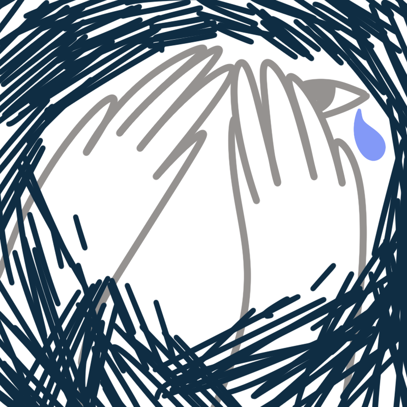
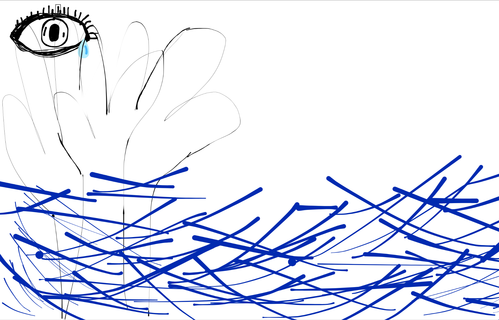
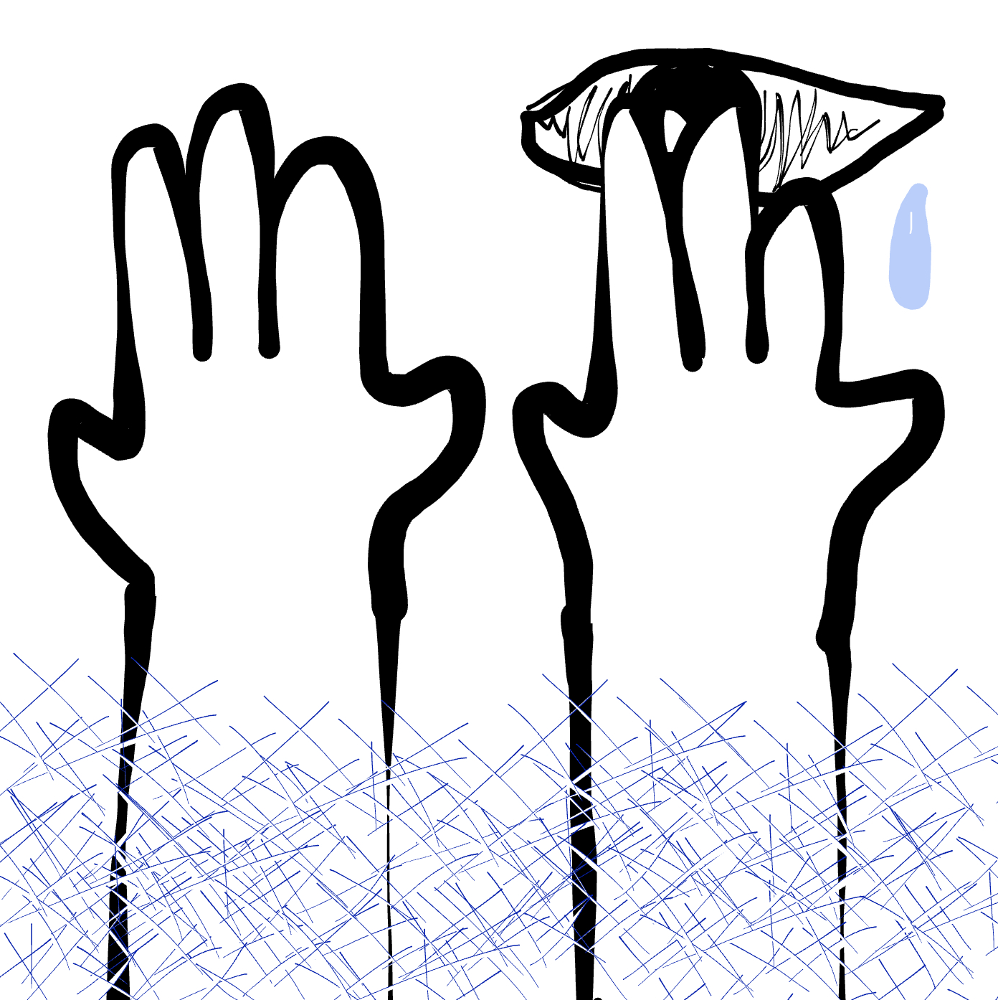
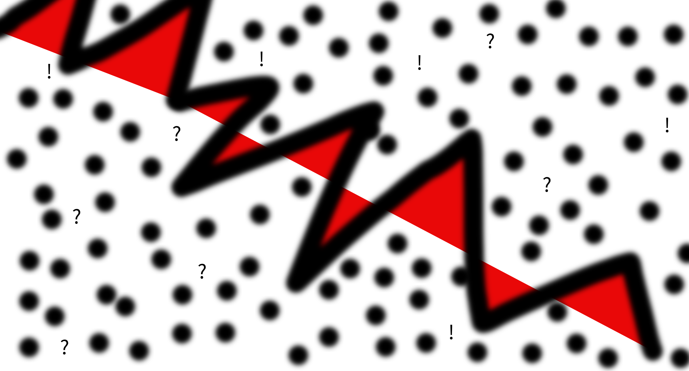
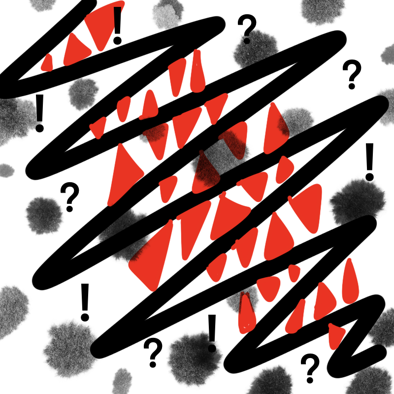
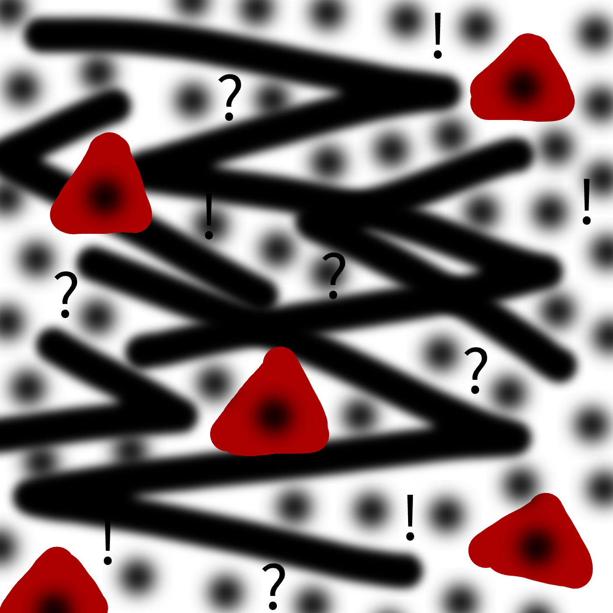
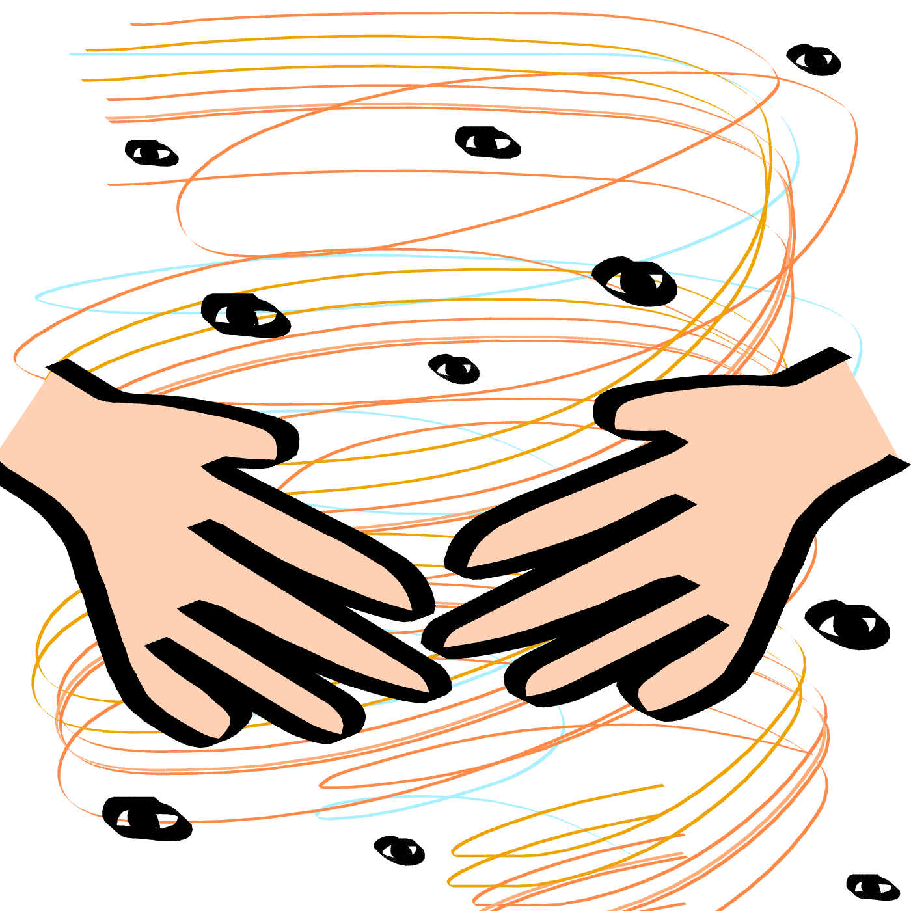
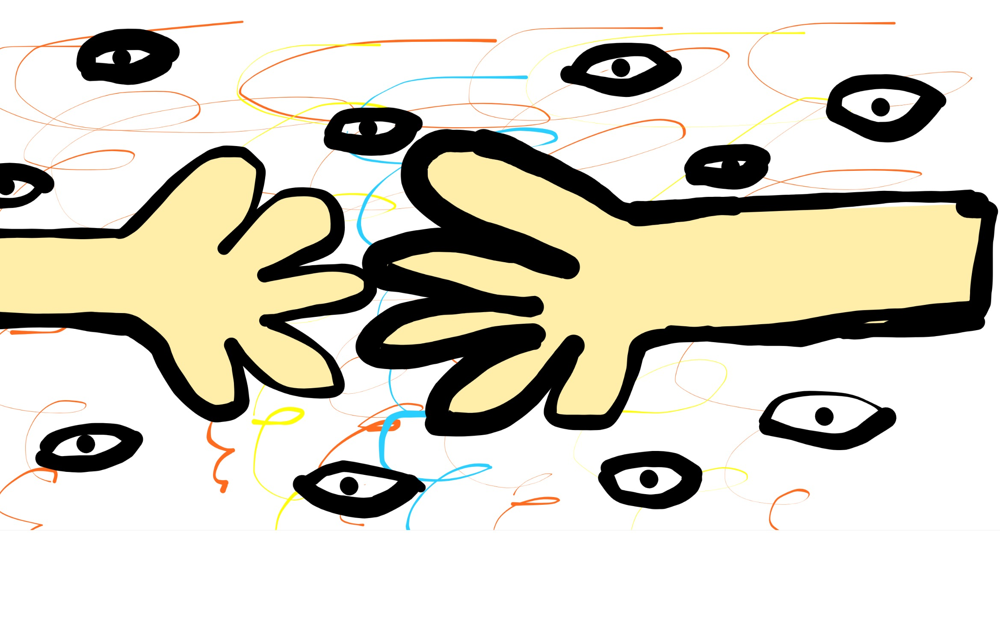
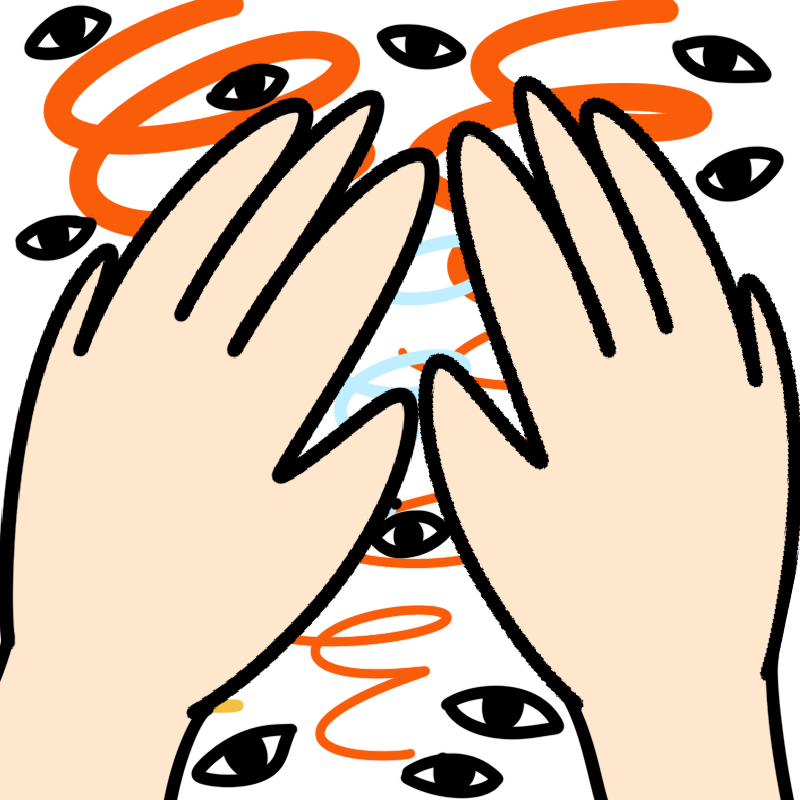

Hidden Emotions
Ani Nguyen Le
Chosen emotion: Shame
Script
1. Start with drawing out one eye with a black pen near the top right corner of the white canvas.
2. A baby blue teardrop will come out from the right corner of this eye.
3. Two hands with black outline and white filling will emerge from the bottom of the picture, imitating covering a face.
4. The hand on OUR right side covers ⅓ part of the eye.
5. Apply a lot of short dark blue pen strokes around the frame of the canvas, achieving the look of a birdnest – these pen strokes cover the bottom of the emerging hands but they don’t cover the eye and the upper half of these hands.
My Drawing

Erica's drawing of Shame

Grace's drawing of Shame

Erica Park
Chosen emotion: Hurt
Script
1. Start with the paintbrush and draw thick big black zig zags diagonally across the screen
2. Fill the empty in-betweens of the black zig zags with red triangles filling within it
3. Place many black fuzzy dots all over the screen
4. Now switch to text (instead of paint/draw) and place five "?" anywhere on the screen
5. Now switch to text and place five "!" anywhere on the screen
My Drawing

Ani's drawing of Hurt

Grace's drawing of Hurt

Grace Rhatigan
Chosen emotion: Concern
Script
1. Draw five orange swirls in the shape of a tornado that starts wide at the top of the canvas and gets thinner towards the bottom. Swirls should overlap.
2. Draw two yellow swirls in the same shape as above.
3. Draw one light blue swirl in the same shape as above.
4. Draw two fair skin-toned hands with thick, black outlines in the middle of and as wide as the canvas, positioned as if the hands are almost holding one another.
5. Draw ten eyes with the same outline as above, distributed evenly throughout the blank spaces of the canvas.
My Drawing

Erica's drawing of Concern

Ani's drawing of Concern
